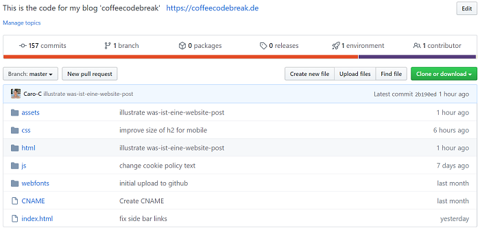

Das Tolle am Programmieren ist, dass man sofort das Ergebnis sehen kann. Ich liebe schöne Dinge und als ich entdeckt hatte, wie viele Gestaltungsmöglichkeiten CSS bietet, war ich kaum noch vom Laptop wegzubekommen. Meine Arbeit lag bis dahin allerdings nur bei mir auf meinem eigenen Laptop. Und da ich meine Begeisterung und all diese schönen Ergebnisse unbedingt teilen wollte, musste das Ganze irgendwie ins Internet.
Dynamische und statische Webseiten
In meinem letzten Post Wie baut man so eine Webseite? habe ich dir erzählt, was die Grundbausteine sind, wenn du eine statische Webseite bauen möchtest. Statisch deshalb, weil du für jede Seite bzw. Unterseite deiner Webseite eine eigene HTML-Datei mit eigenem Code anlegst. Zur Erinnerung: in eine HTML-Datei schreibst du ganz einfach die Inhalte, die deine Webseite zeigen soll - zum Beispiel diesen Text. Dein Benutzer sieht, wenn er deine statische Webseite aufruft, genau das, was du für jede Seite einzeln programmiert hast. Hierfür reichen dir bereits die Sprachen HTML, CSS und JavaScript. Genauer gesagt kannst du eine solche Seite allein schon mit HTML programmieren.Dynamische Webseite dagegen sind, wie der Name schon vermuten lässt, flexibler. Hinter diesen stecken beispielsweise Datenbanken oder ganze Content Management Systeme (CMS), also Strukturen, in denen du deine Blogposts, Fotos etc. ablegen und verwalten kannst. Wenn jemand deine Webseite aufruft, werden die Inhalte für die gewünschte Seite erst einmal individuell zusammengestellt, bevor sie an ihn geschickt werden. Für dich hat das den Vorteil, dass du viel weniger Aufwand mit deiner Webseite hast. Außerdem kannst du mit den Besuchern deiner Webseite interagieren. Zum Beispiel kannst du einen Online-Shop betreiben, in dem sich deine Besucher einen Account anlegen und über diesen deine Produkte bestellen können.
Mit statischen Webseiten geht das nicht. Der Nachteil von statischen Webseiten ist außerdem, dass du wirklich alles, was du auf einer Seite änderst, manuell in deinem Code ändern musst. Wenn ich also eine optische Anpassung in meinem Auswahlmenü vornehme, muss ich diese in jeder einzelnen Datei, die ich geschrieben habe (also für jede einzelne Seite, die du besuchen kannst und auf der das Auswahlmenü zu sehen ist) vornehmen. Nervig! Langfristig also keine angenehme Lösung für einen Blog.
Dafür laden statische Seiten aber schneller und es kommt grundsätzlich immer ganz darauf an, was du mit deiner Seite erreichen möchtest.
Der Webserver
Eigentlich wollte ich dir aber erzählen, wie mein schöner Code, der momentan noch ausschließlich bei mir auf dem Rechner liegt, zu einer Webseite wird. Was muss ich also tun, um meine Seite mit jedem auf der Welt zu teilen? Du benötigst im Großen und Ganzen zwei Dinge: einen Webhoster und eine Domain. Das klingt wahrscheinlich ziemlich nerdig. Aber auch hinter diesen beiden Begriffen steckt gar nicht so viel Zauberei.Damit deine Besucher deine Webseite im Internet ansehen können, musst du ihnen diese irgendwie zugänglich machen. Das heißt, dein Code, der bisher nur in deinen Dateien auf deinem eigenen Rechner lag, muss an einen zentralen Platz gebracht werden. Genauer gesagt auf einen Webserver.
Ein Webserver ist ein Computer, der in der Lage ist, Anfragen von Browsern zu bedienen. Wenn du über deinen Browser eine Webseite aufrufst, schickt dieser eine Anfrage an den richtigen Webserver. Also an den Webserver, auf dem deine Dateien mit deinem Code liegen. Dieser antwortet deinem Browser dann mit all den Informationen, die er benötigt, um dir die gewünschte Webseite anzuzeigen.
So einen Webserver musst du nicht selbst besitzen. Es gibt unzählige Anbieter, sogenannte Webhoster, die dir einen kleinen Platz auf ihren riesigen Webservern zur Miete oder auch kostenlos zur Verfügung stellen. Nachdem du einen Platz auf einem Webserver gemietet hast, kannst du deine Dateien an diesen übertragen. Und schon kann deine Webseite von der ganzen Welt aus aufgerufen werden.
Moment - woher weiß dein Besucher denn nun, wie er deine Webseite aufruft? Und wie genau kommt deine Webseite in seinen Browser?
Die Domain
Wenn du eine Webseite veröffentlichst, benötigst du noch eine Domain. Also das, was dein Besucher oben im Browser eingibt, wenn er deine Webseite aufrufen will. Wenn du meinen Blog lesen möchtest, wäre das zum Beispiel coffeecodebreak.de. Auch für Domains gibt es zahlreiche Anbieter im Internet. Du kannst auf deren Seiten testen, ob deine Wunsch-Domain bereits vergeben ist. Wenn sie noch verfügbar ist, kannst du dir diese Domain kaufen. Das geht ziemlich einfach und bereits ab unter einem Euro im Monat.Viele Webhoster bieten an, direkt über sie auch eine Domain zu kaufen. Wenn du deine Domain nicht direkt bei deinem Webhoster gekauft hast, musst du die beiden noch miteinander verbinden. Und das war schon alles! Jeder, der deine Domain in seinem Browser eingibt, kann auf deine Webseite zugreifen.
Die Domain enthält quasi den Schlüssel, der deinem Browser sagt, bei welchem Webserver er deine Webseite anfragen muss. Etwas technischer ausgedrückt wird deine Domain in eine IP-Adresse verwandelt. Das ist die Adresse deines Webservers. Dein Browser weiß also durch die Domain, an welche Adresse er seine Anfrage schicken soll. Er nimmt dann die gesamte URL und schickt sie an den Webserver, auf dem deine Dateien liegen.
Die gesamt URL deshalb, weil du ja nicht immer nur auf der Startseite coffeecodebreak.de bist. Jetzt gerade steht in deinem Browser vermutlich coffeecodebreak.de/html/reads.html/wie-kommt-der-blog-ins-internet.html. In meinem Post Wie baut man so eine Webseite? habe ich dir erzählt, dass deine HTML-, CSS- und JavaScript-Dateien in einer Ordnerstruktur abgelegt werden. Und genau diese Ordnerstruktur kannst du hier nachvollziehen. “html” ist ein Ordner, der in meinem Hauptordner liegt. In diesem liegt wiederum der Ordner “reads” und in diesem habe ich die HTML-Datei “wie-baut-man-so-einen-blog.html” abgelegt. Und in diese Datei habe ich den HTML-Code geschrieben, den du brauchst, um diesen Post lesen zu können.
Der komplette Pfad wird also von deinem Browser an die IP-Adresse und damit an den Webserver geschickt, auf dem meine Dateien liegen. Und der Webserver antwortet deinem Browser, indem er dir alle Dateien schickt, die er benötigt, um dir genau diese Webseite anzuzeigen. Die URL mit meinen Ordner- und Dateinamen verrät ihm, welche Seite du angefragt hast. Wie dein Browser aus dem Code schlussendlich die Webseite macht, erkläre ich dir in meinem Blog-Post Wie wird aus meinem Code eine schöne Webseite?.
Wie ich das Ganze selbst umgesetzt habe
Das waren doch ganz schön viele Infos. Um alles noch einmal für dich zusammenzufassen, erzähle dir am besten noch einmal, wie ich selbst vorgegangen bin.1. Github Account erstellen
In meinem Udacity-Kurs, mit dem ich Programmieren gelernt habe, wurde Github Pages vorgestellt. Github ist eine Kollaborationsplattform, auf der viele Millionen Softwareentwickler registriert sind, die dort gemeinsam an Code arbeiten. Github Pages ist ein kostenloses Angebot von Github, eine statische Webseite über deren Webserver zu hosten. Dafür ist mein Code auf Gitbhub öffentlich zugänglich, d.h. jeder angemeldete User kann ihn sich ansehen. Ich habe also erst einmal einen Account bei Github erstellt.2. Respository anlegen
Rückblickend ist es ganz einfach, eine Webseite über Github Pages online zu bringen. Aufgrund meiner Anfängerfehler hat es mich aber ganz schön viel Zeit gekostet.Kurz gesagt lädt man seine Dateien, also den Code, in ein sogenanntes “Repository” hoch. Das ist wie ein Ordner, der die geniale Eigenschaft hat, verschiedene Versionen deines Codes verwalten zu können. Es geht also nichts verloren, wenn man Änderungen vornimmt. Meine Ordnerstruktur, die ich auf meinem Laptop bereits als Git-Repository (ebenfalls zur Versionierung) angelegt hatte, wurde dabei in mein Github-Repository übertragen. Das ist auch genau die Ordnerstruktur, die sich in der URL der einzelnen Seiten meines Blogs zeigt. Hier ist ein Bild von meinem Github-Repository:

3. Github Pages aktivieren
Wenn man es geschafft hat, die Dateien erfolgreich in sein Repository zu laden, ist nur noch ein ganz einfacher, kleiner Schritt nötig. In den Einstellungen des Repositories gibt es eine Github Pages Rubrik. Hier muss man einen Haken setzen. Und voilá - die Webseite ist online!4. Domain kaufen
Github verleiht deiner Webseite automatisch eine Domain. Diese Domain heißt immer irgendetwas mit ...github.io. Man muss die Domain von Github nicht behalten und da ich coffeecodebreak.de schöner fand, habe ich mir diese bei einem der Domain-Provider gekauft.5. Domain mit Webseite verbinden
Die Domain habe ich dann noch mit meiner Website verbunden. Das habe ich gemacht, indem ich bei meinem Domain-Anbieter meine Domain “coffeecodebreak.de” mit der IP-Adresse des Github Servers verknüpft habe. Die IP-Adresse findest du auf der Github-Seite. Du kopierst sie einfach und fügst sie in deinem Domain-Account deiner Domain hinzu.Auf der anderen Seite musste ich meinem Webserver mitteilen, dass meine Webseite, die bisher mit dem github.io-Namen aufgerufen wurde, ab jetzt mit der Domain coffeecodebreak.de angefragt wird. Dazu musste ich in meinem Repository eine kleine Datei namens CNAME anlegen, in die ich meine Domain geschrieben habe. Und damit war es geschafft!
In meiner Domain coffeecodebreak.de liegt jetzt also die Information, welche IP-Adresse der Webserver hat, auf dem meine Dateien liegen. Gleichzeitig weiß mein Webserver, wenn er eine Anfrage nach meiner Webseite erhält, wonach er suchen muss. Er findet meine Dateien und schickt diese an deinen Browser zurück. Und so kommt meine Webseite in deinen Laptop, dein Handy oder in sonstige Geräte, mit denen du sie aufrufst. Eigentlich ziemlich logisch! :)
Ich hoffe, dieser Post hat dir gefallen und dich ein wenig bereichert.
Bis zum nächsten Mal!
Deine Caro
Schreibe einen Kommentar
Ich freue mich, wenn du mir einen Kommentar hinterlässt. Deine E-Mail-Adresse wird nicht veröffentlicht. Die mit * gekennzeichneten Felder müssen ausgefüllt werden, um den Kommentar zu versenden. Bis dein Kommentar veröffentlicht wird, kann es einige Stunden dauern.